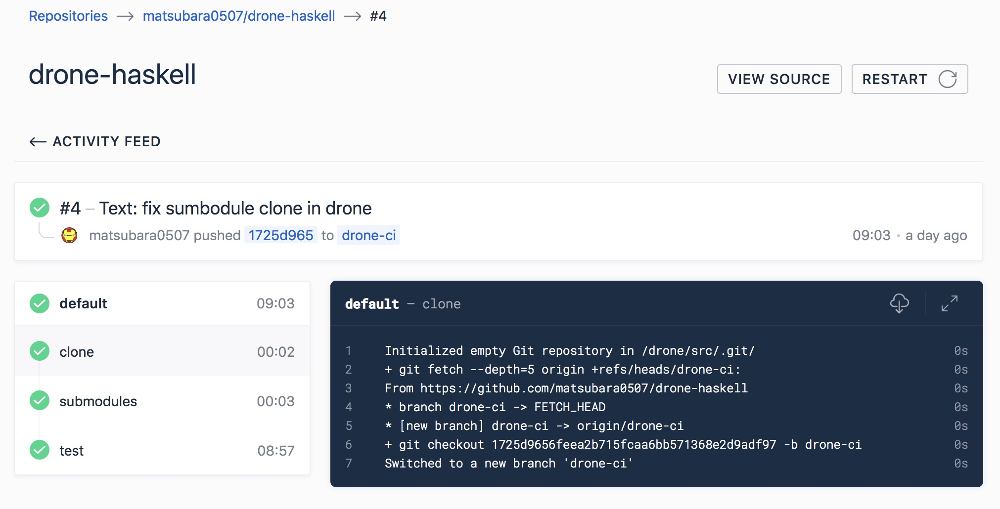
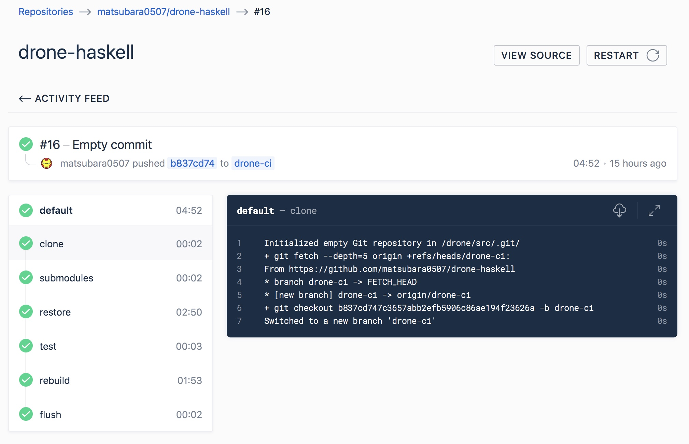

GCS で Drone 1.0 をキャッシュする
Drone ネタ2本目． せっかく drone-haskell を作ったので TravisCI でテストを回すのではなく，Drone で回そうかなと思ったのだが，Stack でフルビルドするとめっちゃ時間かかる． なので，Drone のキャッシュをやってみましたっていう小話です．
Cache in Drone
Drone でキャッシュを利用するには次のような Plugin を使用する:
- drone-s3-cache: GitHub・Marketplace
- drone-volume-cache: GitHub・Marketplace
- drone-gcs-cache: GitHub・Marketplace
s3-cache や gcs-cache は任意のフォルダを tar かなんかに固めて各種クラウドストレージに保存する． volume-cache はローカルに保存してくれるのだが，これを利用するためにはリポジトリの Trusted フラグを立てる必要がある． ただし，これは Admin しかできないので，Drone Cloud では利用できない． なので s3-cache や gcs-cache を使うしかない．
ちなみに公式で提供してくれてるのは s3-cache なので，そっちを使うべきなのだが，見事に AWS のパスワードやらを忘れてしまったので GCP の Cloud Storage の方を利用した(オイ)． ただ，gcs-cache は 0.8.x 時代の設定方法しか書いてない． いろいろ調べてみた結果，YAML の書き方を変えるだけでそのまま利用できそうだったのでそのまま drone-gcs-cache を利用する．
Drone GCS Cache
認証鍵の設定
GCS の認証にはサービスアカウントの JSON Key を使う． GCP コンソールの APIとサービス の 認証情報 からサービスアカウントを作成し(このときに JSON が DL される)，IAMと管理 の IAM からさっき作ったアカウントに ストレージ管理者 を追加した IAM を作成する．
この JSON を Drone のウェブコンソールから Secret として設定する． 改行込みでファイルの中身そのままコピペで大丈夫． もし PR を作成したときにも動作させたいなら Allow Pull Requests にチェックする．
YAML の設定
あとは YAML を設定するだけ． 例えば drone-gcs-cache の古い設定を書き直すと次のようになる:
kind: pipeline
name: default
steps:
- name: restore
image: homerovalle/drone-gcs-cache
settings:
pull: true
bucket: gcs_bucket
json_key:
from_secret: gcs-access-json-key
restore: true
- name: build
image: node
commands:
- npm install
- name: rebuild
image: homerovalle/drone-gcs-cache
settings:
pull: true
bucket: gcs_bucket
json_key:
from_secret: gcs-access-json-key
rebuild: true
mount:
- node_modules
when:
event: push
- name: flush
image: homerovalle/drone-gcs-cache
settings:
pull: true
bucket: gcs_bucket
json_key:
from_secret: gcs-access-json-key
flush: true
flush_age: 14これは Drone の Secret に gcs-access-json-key という名前で登録している場合である． ちなみに flush_age は，ここで設定した日付よりも前のキャッシュを削除する設定のようだ(デフォルトは30)．
Haskell で試す
ちなみに導入したPRはこれ． .stack と .stack-work をキャッシュする:
kind: pipeline
name: default
steps:
- name: restore
image: homerovalle/drone-gcs-cache
settings:
...
- name: test
image: haskell:8.6
commands:
- stack --no-terminal --stack-root `pwd`/.stack --install-ghc test --bench --only-dependencies
- stack --no-terminal --stack-root `pwd`/.stack test --bench --no-run-benchmarks --no-haddock-deps --pedantic
- name: rebuild
image: homerovalle/drone-gcs-cache
settings:
pull: true
bucket: matsubara-drone-cache
json_key:
from_secret: gcs-access-json-key
rebuild: true
mount:
- .stack
- .stack-work
when:
event: push
- name: flush
image: homerovalle/drone-gcs-cache
settings:
...restore と flush は同じなので割愛． $HOME/.stack だと動作しなかったので，いっそのことカレントディレクトリに .stack を持ってくることにした． で，実際どれくらい早くなったのか． ビフォー:

9分は長い． そんでアフター:

4GB弱キャッシュされてるので，restore に結構かかってしまう． まぁ半分近くになったのでこれで良しとしましょう(GCS分のお金はかかるけど)．
おしまい
Drone は Crone を hourly で使えるから haskell-antenna を Drone に移行してみようかしら．